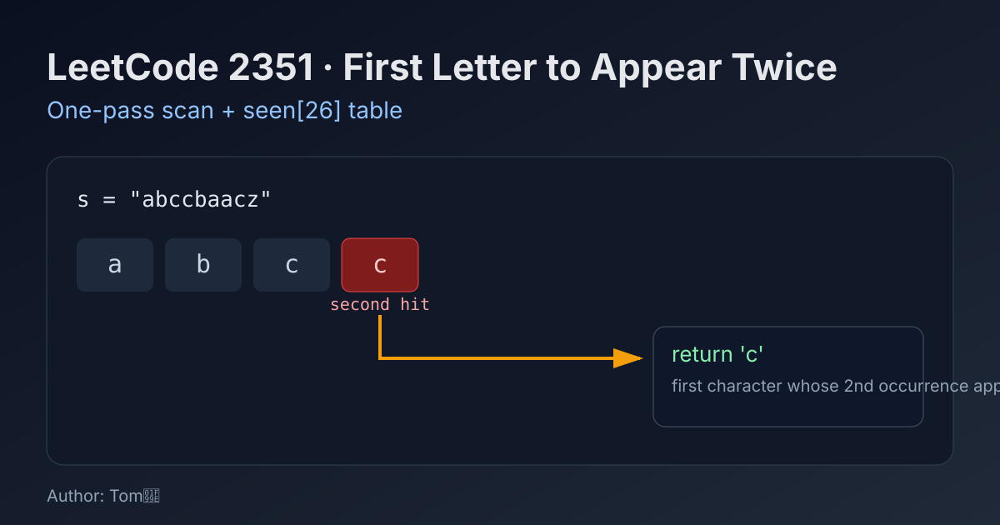

LeetCode 2351: First Letter to Appear Twice (One-Pass Seen Table)
LeetCode 2351StringHash TableToday we solve LeetCode 2351 - First Letter to Appear Twice.
Source: https://leetcode.com/problems/first-letter-to-appear-twice/

English
Problem Summary
Given a lowercase string s, return the first letter that appears twice. “First” means the repeated character whose second occurrence has the smallest index.
Key Insight
Scan left to right and track whether each character has appeared before. The first time we encounter an already seen character, that character is exactly the required answer.
Algorithm
- Create a boolean array seen[26] initialized to false.
- Iterate each character ch in s.
- Map to index idx = ch - 'a'.
- If seen[idx] is true, return ch immediately.
- Otherwise set seen[idx] = true and continue.
Complexity Analysis
Let n be the string length.
Time: O(n).
Space: O(1) (fixed 26 letters).
Common Pitfalls
- Returning the smallest alphabet letter that repeats instead of first second-occurrence order.
- Doing two passes unnecessarily.
- Forgetting the input is guaranteed to contain at least one repeated letter.
Reference Implementations (Java / Go / C++ / Python / JavaScript)
class Solution {
public char repeatedCharacter(String s) {
boolean[] seen = new boolean[26];
for (int i = 0; i < s.length(); i++) {
int idx = s.charAt(i) - 'a';
if (seen[idx]) return s.charAt(i);
seen[idx] = true;
}
return '\0';
}
}func repeatedCharacter(s string) byte {
seen := [26]bool{}
for i := 0; i < len(s); i++ {
idx := s[i] - 'a'
if seen[idx] {
return s[i]
}
seen[idx] = true
}
return 0
}class Solution {
public:
char repeatedCharacter(string s) {
bool seen[26] = {false};
for (char ch : s) {
int idx = ch - 'a';
if (seen[idx]) return ch;
seen[idx] = true;
}
return '\0';
}
};class Solution:
def repeatedCharacter(self, s: str) -> str:
seen = [False] * 26
for ch in s:
idx = ord(ch) - ord('a')
if seen[idx]:
return ch
seen[idx] = True
return ''var repeatedCharacter = function(s) {
const seen = new Array(26).fill(false);
for (const ch of s) {
const idx = ch.charCodeAt(0) - 97;
if (seen[idx]) return ch;
seen[idx] = true;
}
return '';
};中文
题目概述
给定一个仅含小写字母的字符串 s，返回第一个出现两次的字母。这里“第一个”指的是其第二次出现位置最靠前的字符。
核心思路
从左到右遍历，用 seen[26] 记录某个字母是否出现过。遇到已出现过的字母时，立即返回，它就是答案。
算法步骤
- 初始化布尔数组 seen[26]。
- 逐字符遍历字符串。
- 计算下标 idx = ch - 'a'。
- 若 seen[idx] 为真，直接返回当前字符。
- 否则标记 seen[idx] = true。
复杂度分析
设字符串长度为 n。
时间复杂度：O(n)。
空间复杂度：O(1)（字母表固定 26 个）。
常见陷阱
- 误以为要返回“字典序最小的重复字符”。
- 写成两次遍历，增加不必要复杂度。
- 忽略题目保证至少存在一个重复字符。
多语言参考实现（Java / Go / C++ / Python / JavaScript）
class Solution {
public char repeatedCharacter(String s) {
boolean[] seen = new boolean[26];
for (int i = 0; i < s.length(); i++) {
int idx = s.charAt(i) - 'a';
if (seen[idx]) return s.charAt(i);
seen[idx] = true;
}
return '\0';
}
}func repeatedCharacter(s string) byte {
seen := [26]bool{}
for i := 0; i < len(s); i++ {
idx := s[i] - 'a'
if seen[idx] {
return s[i]
}
seen[idx] = true
}
return 0
}class Solution {
public:
char repeatedCharacter(string s) {
bool seen[26] = {false};
for (char ch : s) {
int idx = ch - 'a';
if (seen[idx]) return ch;
seen[idx] = true;
}
return '\0';
}
};class Solution:
def repeatedCharacter(self, s: str) -> str:
seen = [False] * 26
for ch in s:
idx = ord(ch) - ord('a')
if seen[idx]:
return ch
seen[idx] = True
return ''var repeatedCharacter = function(s) {
const seen = new Array(26).fill(false);
for (const ch of s) {
const idx = ch.charCodeAt(0) - 97;
if (seen[idx]) return ch;
seen[idx] = true;
}
return '';
};
Comments